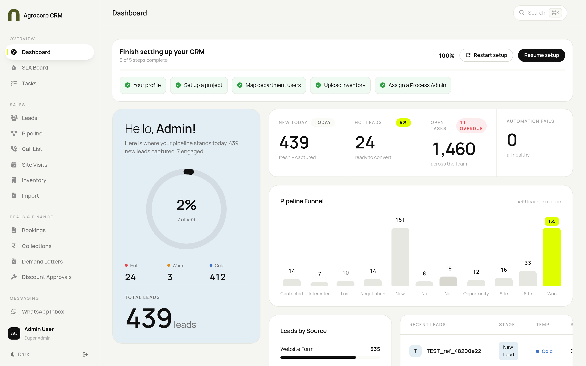
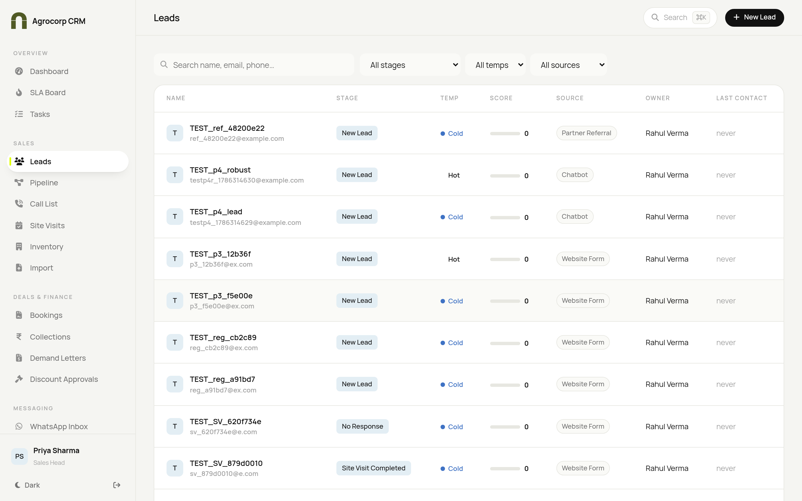
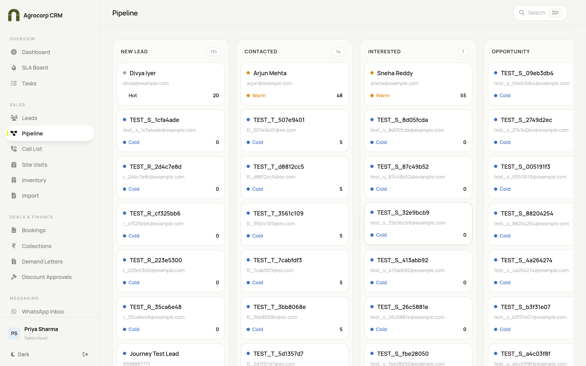
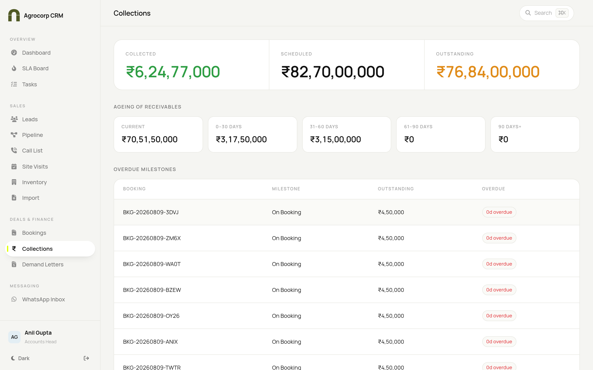
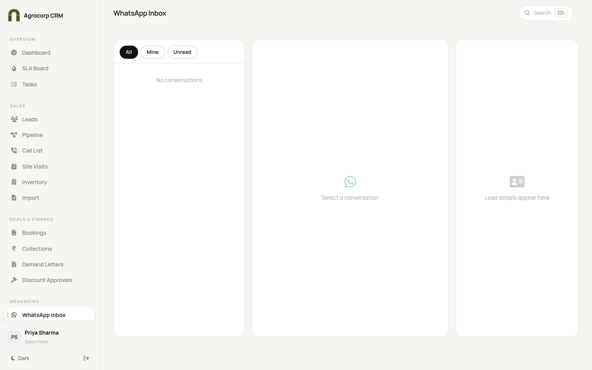
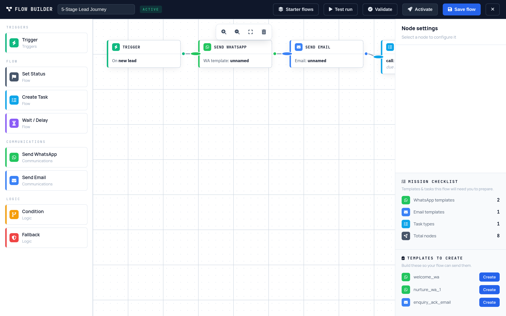
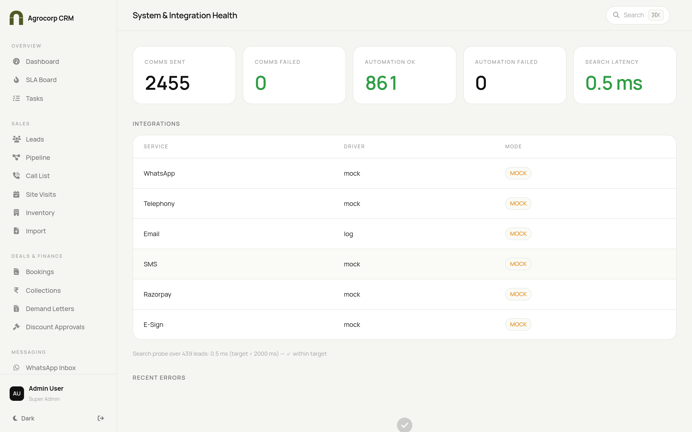
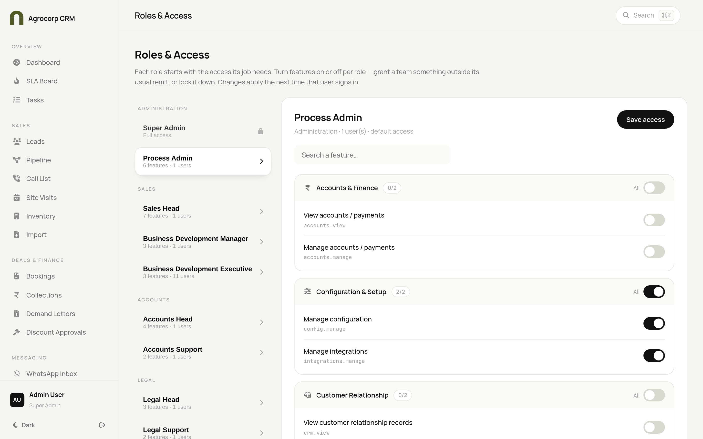
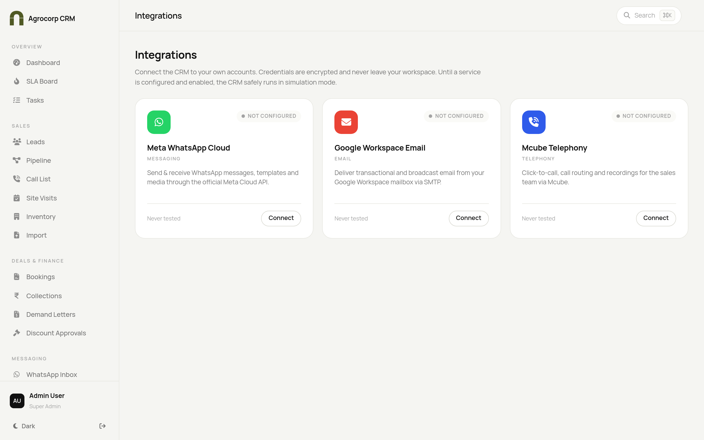

One system to run the entire real-estate sales journey — from the first enquiry to booking, payment and handover. Built for the whole organisation.
Lead to BookingWhatsApp & Email12-Role AccessAutomationPartner PortalLive Dashboards
Prepared for stakeholder discussion. real estate. reimagined.
Agrocorp CRM
Product Overview
1. Executive summary
Agrocorp CRM is a complete, sellable Real Estate CRM — one platform that runs a property sales business end to end.
It captures every enquiry, makes sure the sales team follows up on time, manages site visits, bookings, payments and legal documents, sends WhatsApp and email at scale, and gives management a clear, live picture of the whole business.
Built for real estate, not a generic sales tool.
One system, many roles — sales, accounts, legal, customer care, management and channel partners all work together, each seeing only what they should.
Ready to sell as a product — premium, modern interface with a guided first-time setup wizard.
Safe by default — runs in demo mode until the company connects its own messaging, email and calling accounts.

The executive dashboard — pipeline health, hot/warm/cold split and live activity at a glance.
2. The problem it solves
Real-estate sales teams typically lose deals because:
Leads slip through the cracks — no single place to see every enquiry, so follow-ups are missed.
Slow follow-up — the first company to respond usually wins; manual processes are too slow.
No visibility for management — leadership can't see, in real time, where deals are or why they stall.
Scattered tools — WhatsApp on personal phones, payments in spreadsheets, documents in email.
Weak accountability — hard to know who did what, and whether deadlines were met.
Agrocorp CRM fixes all of the above by putting the entire customer journey in one accountable system with automatic reminders and clear ownership.
3. What the CRM does (core capabilities)
3.1 Lead management
Captures leads from website, WhatsApp, manual entry, bulk import and partner referrals.
Automatically blocks duplicates and flags similar records.
Scores each lead and marks it Hot (70+), Warm (40–69) or Cold (<40).
Routes leads to the right owner automatically.

Central lead list with stage, temperature, score, source and owner.
3.2 Sales execution
Pipeline board to move deals through stages with drag-and-drop.
Daily call lists and task lists so every rep knows what to do next.
Site-visit scheduling with reminders, no-show tracking and location check-in/out.
SLA "Heat Board" surfacing anything overdue or at risk.

Drag-and-drop pipeline — move a lead across stages in one gesture.
3.3 Deals, finance & documents
Cost sheets, payment plans and proposals.
Discount approvals with built-in limits (>5% and >10%).
Bookings with locked records for data integrity.
Payments, receipts, reconciliation and welcome documents.
Allotment and agreements triggered automatically at 10% collection.
Demand letters with serial numbers, ageing and interest on late payments.

Collections — collected vs scheduled vs outstanding, with ageing of receivables.
3.4 Communication at scale
Built-in WhatsApp inbox — assignment, notes, tags, canned replies, broadcasts, auto-replies, templates and analytics (a built-in alternative to tools like WATI).
Website chat widget — an embeddable box that captures leads directly from the company website.

Three-pane WhatsApp workspace: conversations, live thread and lead context.
3.5 Automation
A visual workflow builder (drag-and-connect, no coding): e.g. when a new hot lead arrives → send a WhatsApp → wait a day → create a follow-up task.
Rules run automatically in the background based on real lead activity.

The Flow Builder — automate journeys visually, no code required.
3.6 Management & governance
Personalised dashboards with key numbers and pipeline health.
Full audit log — who did what, when.
System & integration health monitoring.
Live "customer journey" tracker on every lead.

System & Integration Health — comms volume, automation success and search latency.
4. Roles & access (built for a whole organisation)
The CRM supports a 12-role hierarchy, each with tailored access.
Group
Roles
What they own
Administration
Super Admin, Process Admin
Own & run the system, setup, users, integrations
Sales
Sales Head, BDM, BDE
Leads, pipeline, visits, discount approvals
Accounts
Accounts Head, Accounts Support
Payments, collections, demand letters
Legal
Legal Head, Legal Support
Agreements & legal documents
Customer Relationship
CRM Head, CRM Support
Post-sales care & communication
External
Channel Partner
Only their own referrals, bookings & commissions
Key principles. Department Heads can create, edit, approve and delete within their area. Support staff can view and assist, but not delete or approve. Channel Partners are fully isolated. Access can be fine-tuned per role by the Admin, with a one-click reset to defaults.

Roles & Access — turn individual permissions on/off per role.
5. Channel Partner programme
Partner portal showing only their own leads, bookings and commissions.
Referral links with automatic attribution on conversion.
Commission lifecycle with admin approval controls.
Branded website chat widget per partner.
Automatic WhatsApp nudges for overdue items, with consent/DNC and anti-spam safeguards.
A self-service Integrations Hub lets the customer connect their own accounts — no dependency on the vendor for credentials.
Meta WhatsApp Cloud — real WhatsApp messaging.
Google Workspace Email — real email via a dedicated mailbox.
Mcube — calling / telephony.
Admin/Process Admin connect accounts through a simple guided form. Secrets are encrypted and never displayed again. Each connection has a "Test connection" button before going live, and the framework is extensible for more services later.

Integrations Hub — connect WhatsApp, Email and Calling from inside the CRM.
Current status. The Integrations Hub is built and tested. Live operation begins once the company enters its own credentials and completes provider validation. Payments (e.g. Razorpay), SMS and e-signature are prepared but not yet live.
7. Design & experience
Premium, modern interface — feels like a high-end SaaS product, not a generic admin panel.
Warm, calm, editorial look with clear numbers and restrained accent colour.
Keyboard command palette (Ctrl/Cmd + K) to search and jump anywhere instantly.
Built on a proven, secure web stack (Laravel + MySQL).
Role-based security ensures people only access what they should.
Automatic background jobs handle reminders, follow-ups and scheduled messages.
Extensively tested end-to-end across many rounds.
Performance-ready — lead search stays under 2 seconds even at 100,000+ leads.
Single-company today, with a clear path to multiple communities/farms in future.
9. Business rules baked in
Rule
Standard
Lead temperature
Hot = 70+ · Warm = 40–69 · Cold = <40
Discount approvals
Required above 5% and above 10%
Allotment trigger
At 10% collections
Site-visit report
Within 2 hours
Sales handover contact
Within 24 hours
Performance
Lead search < 2s · automation < 2 min
10. Current status & what's next
Delivered & tested
Full lead → booking → collection lifecycle.
12-role access model and partner portal.
Built-in WhatsApp and email communication.
Visual automation builder and live journey tracker.
Premium redesigned interface and self-service Integrations Hub.
Next steps to go fully live
Company connects its own WhatsApp, email and calling accounts.
Validate live sending/receiving with real credentials.
Optionally activate payments (Razorpay), SMS and e-signature.
Growth opportunities
Multi-community / multi-project expansion.
Additional integrations and advanced leadership analytics.
11. The one-paragraph pitch
"Agrocorp CRM is a complete, ready-to-sell real-estate CRM that runs the entire sales journey — from the first enquiry to booking, payment and handover — in one beautifully designed system. It keeps every lead accountable, automates follow-up over WhatsApp and email, gives management a live view of the business, and lets each customer plug in their own messaging, email and calling accounts. It's built for the whole organisation, protects data across roles, and is designed to look and feel like a premium product from day one."